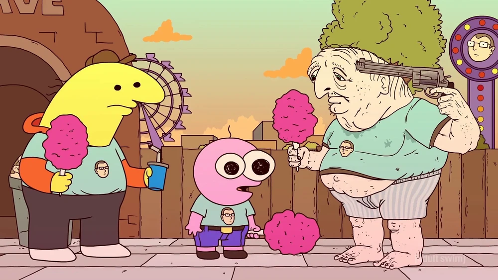
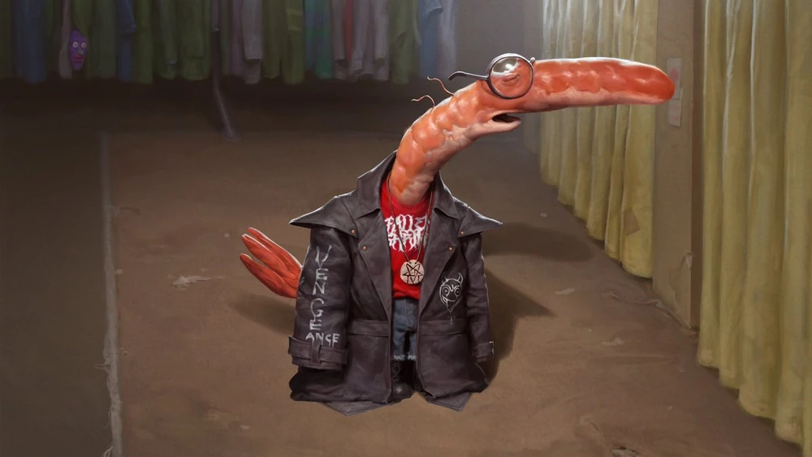
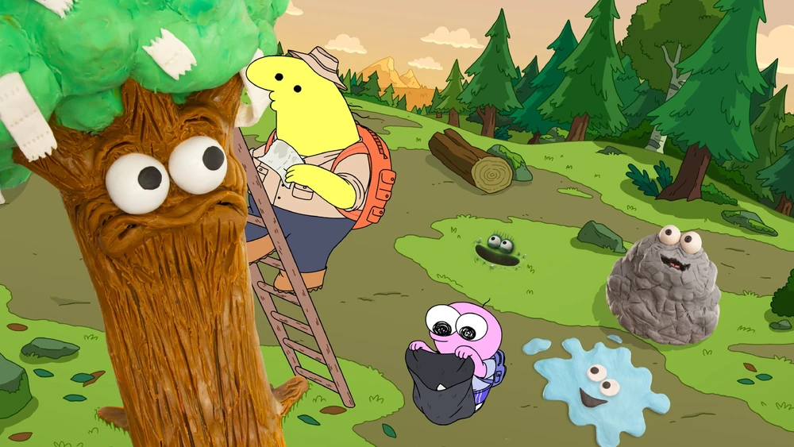

Helping Desmond find purpose
Pim and Charlie are sent to cheer up Desmond, a deeply depressed man threatening himself. Pim persistently tries to connect emotionally, taking him to an amusement park, sharing family time, and giving him hope.
Setting up Shrimp’s date
For Shrimp, who’s heartbroken, Pim tries to reconnect him with his ex, Shrimpina. Pim’s idealism leads him to mistakenly court “Shrimpina” (Jennifer), developing feelings of his own, before doing the right thing.
Quest‑ing in the Enchanted Forest
When tasked to help a princess smile, Pim leads a fantasy-style quest. He becomes jealous of Mip (the hobbit-like guide), culminating in a tragic confrontation where Pim accidentally kills Mip. He then helps deliver Mip’s “gift” to the princess.

Supporting a company retreat / nature mission
In a later episode, Pim accompanies Charlie, Mr. Boss, and others to a forest retreat to “smell the nature” — showing his loyalty and belief in the company’s mission.
